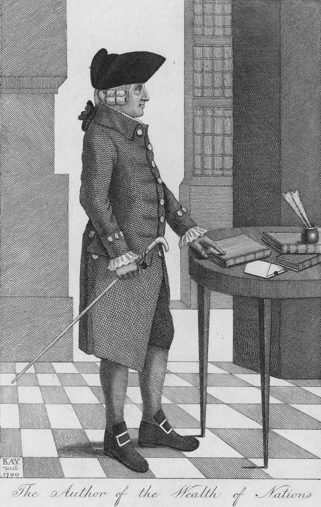

Quão capitalista era Adam Smith,o 'pai do capitalismo'?

"Isso quase soa como Marx", diz Glory Liu, professora de estudos sociais na
Universidade de Harvard. São, contudo, palavras do chamado "pai do capitalismo"
"Há trechos de A Riqueza das Nações em que Adam Smith fala sobre sociedades nas quais a
divisão do trabalho cresceu e se tornou altamente especializada, a ponto de os trabalhadores fazerem a mesma coisa repetidamente - ele diz que isso tende a degradar a
mente e o corpo (...) Que você perde sua humanidade no excesso de trabalho."
Liu resume assim algumas das preocupações sentidas pelo filósofo escocês do século 18,
considerado por muitos como um pioneiro do pensamento político-econômico.
E embora só a tenha usado três vezes – em dois de seus livros e em um ensaio – sua
expressão icônica sobre uma "mão invisível" tem sido repetidamente usada como sinônimo dos benefícios do livre mercado.
Mas o que ele realmente quis dizer?
Perto e longe de 'casa'
Segundo Liu, a explicação do que Smith quis dizer ao usar a expressão "mão invisível" é umabr teoria de consequências involuntárias: independentemente das minhas intenções ao realizar uma ação, com ela posso promover o bem-estar comum. "Por exemplo, quando ele usa a frase em A Riqueza das Nações, na verdade está falando sobre por que os investidores optam por investir mais perto de 'casa' em vez de ir para o exterior", diz à BBC News Mundo, serviço em espanhol da BBC. "E explica que é porque eles têm uma compreensão melhor do ambiente, conhecem as leis, têm uma ideia mais clara de onde seus investimentos podem render." "No fundo, há menos incerteza do que se investissem em países que não conhecem, com regras e cultura diferentes." "Não se trata, todavia, de capitalismo de livre mercado", adverte a especialista. Smith está apenas abordando o tema "investir em casa ou fora" e diz que, ao optar pelo primeiro, você acaba promovendo algo que não era a sua intenção. "Digamos que eu resolva investir em um negócio de esquina e mesmo que minha intenção não seja revitalizar o bairro, isso acaba abrindo espaço para a participação popular, abrindo novos empregos, e isso ajuda as pessoas a ganharem mais e a gastarem mais em outros estabelecimentos." "Esta é uma forma de ilustrar o tipo de percepção social que Smith tem de que, sob certas circunstâncias, as ações de um indivíduo, guiadas puramente pelo interesse próprio, podem ter consequências socialmente benéficas." "E isso é bonito, é uma ideia poderosa", destaca a professora. "Mas também não significa que todas as ações individuais acabarão promovendo o bem-estar comum."
A desigualdade
De fato, segundo alguns pesquisadores, Smith reconhecia os perigos da sociedade mercantilista e como ela poderia gerar grandes desigualdades. Nesse sentido, é preciso localizar sua obra no tempo: A Riqueza das Nações foi publicado em 1776, em Londres. "Os tipos de desigualdades nas que ele pensava eram tanto econômicas quanto políticas", diz Liu. Ele viu como as empresas de sua época eram motivadas pelo interesse próprio para aumentar seus lucros. "E o caminho para alcançar esses objetivos passava por convencer os legisladores, o Estado, usando o poder da lei e os aparatos do governo para lhes assegurar privilégios monopolistas que lhes permitissem ir para a Índia e outros países do sul da Ásia para explorar uma nação inteira em benefício próprio." "Smith não está apenas preocupado com o que acontece com as pessoas na Índia que vivem sob o domínio britânico, ele também está preocupado com o fato de o poder mercantil ter se tornado poder político na Grã-Bretanha, e com o fato de isso criar uma desigualdade política que reforça essa dinâmica de que as pessoas que têm mais riqueza têm mais poder político para ganhar mais riqueza." "Acredito que quando os acadêmicos dizem que Smith estava preocupado com o tipo de desigualdade que pode surgir na sociedade mercantilista, eles se referem precisamente a uma tendência a esse ciclo vicioso no qual pessoas ricas podem de alguma forma reforçar suas próprias posições de poder por meio do Estado."

Um 'socialista'?
Eamonn Butler, diretor do Instituto Adam Smith de Londres, também tem uma leitura sobre o que preocupava Smith. "Ele pensou que uma das maiores causas da grande desigualdade que existia em sua época eram os controles que se impunham sobre os processos dos mercados." "Notou que os ricos e os que estavam em posições de poder, que as grandes empresas e corporações e os políticos, se uniram para fazer regulamentações e leis que os beneficiavam e que não favoreciam outras pessoas, principalmente os mais pobres", completa. Sua avaliação era de que, se "removidos os obstáculos do caminho" para que todos pudessem negociar como quisessem, essas pessoas prejudicadas pelo sistema "estariam muito melhor", observa o pesquisador. "Adam Smith é um personagem complexo, e acho que alguns poderiam dizer que 'ele realmente era um socialista', à medida em que falava com frequência sobre os trabalhadores pobres e sobre como o sistema os tratava mal. Estava preocupado com eles." "Mas, ao mesmo tempo, ele acreditava que a melhor maneira de ajudá-los, de melhorar suas condições, era por meio do livre mercado." "Smith não deveria ser visto como alguém que acreditava no livre mercado porque ajudava os ricos, ele acreditava no livre mercado porque ajudava os pobres."
As implicações
A "mão invisível" de Smith foi usada para disseminar a ideia de que os mercados funcionariam melhor sem intervenções. Era isso que ele pensavam quando escreveu a expressão? "Sim", responde Butler. "Ele falou sobre o sistema de justiça natural, o que significa que, ao permitir que as pessoas façam suas próprias atividades, você ajudaria a construir um mercado que é benéfico para todos." "Ninguém sabe, ninguém planeja que o mercado vai surgir, ele só aparece", resume. Smith deu como exemplo um casaco de lã e quantas pessoas trabalharam para chegar ao produto final: desde aquele que cuidava das ovelhas até aquele que vendia a peça. "Todo mundo faz parte de um sistema que funciona, que trabalha em conjunto e produz bens a baixo custo e em abundância." Mas nem todos estão convencidos de que, com a "mão invisível", Smith sugeriu que os mercados fossem milagrosamente operados por conta própria. Essa ideia foi justamente o motor que levou Liu a escrever seu livro: Adam Smith's America: How a Scottish Philosopher Became an Icon of American Capitalism ("Os Estados Unidos de Adam Smith: como um filósofo escocês se tornou um ícone do capitalismo americano", em tradução literal). "Por que Smith se importa com o tipo de desigualdade que se enraíza no Estado e nas sociedades empresariais, com essa dinâmica entre riqueza e poder?" "Smith não costuma ser associado a isso, as pessoas o associam à magia do livre mercado, a uma espécie de hostilidade a qualquer tipo de intervenção do governo na economia." "Essa, sem dúvida, é a ideia mais popular sobre Adam Smith. Mas como chegamos a ela?"
Fora da Europa
Uma parte da explicação deve ser buscada longe do local onde o filósofo nasceu e desenvolveu grande parte de sua vida acadêmica, a Escócia. É necessário cruzar o Atlântico, defende Liu, que investigou "como gerações de americanos leram, reinterpretaram e transformaram em arma as ideias de Smith, revelando como sua imagem popular como defensor do capitalismo de estilo americano e dos mercados livres é uma invenção histórica". A Escola de Economia de Chicago, que nasceu em meados do século 20 na Universidade de Chicago, é uma escola de pensamento que defende o livre mercado, a desregulamentação e a privatização. "A razão pela qual a versão deles de Smith se tornou tão poderosa se deve à reinterpretação que fizeram da ideia de interesse próprio e da 'mão invisível' dentro da estrutura metodológica da teoria dos preços", explica Liu. "Assim, Milton Friedman ou George Stigler, ambos ganhadores do Prêmio Nobel e, portanto, altamente reconhecidos como nomes de destaque no campo econômico, pegam os trabalhos de Smith e dizem: 'Smith viu como o mecanismo de preços poderia coordenar a atividade de milhões de pessoas sem a necessidade de central direção ou intervenção." "E eles o usam não apenas como um tipo de descrição científica objetiva de como os mercados funcionam, mas também para defender sua posição política: não precisamos de intervenção do governo. Na verdade, muitas vezes isso faz mais mal do que bem."
As liberdades
Outro aspecto que Liu destaca é como, nessa releitura de Smith, a liberdade econômica é percebida. "É vista como um pré-requisito para a liberdade política, e quando o governo tenta interferir na economia, está interferindo na sua liberdade." Há muita distância entre essa interpretação e o que preocupava Smith, afirma a professora. "Smith certamente acreditava que a liberdade individual era uma coisa boa, (...) mas ele não escreveu A Riqueza das Nações para defender a todo custo a liberdade econômica do indivíduo." "Ele estava realmente preocupado com a forma como os grupos privados poderiam dominar e oprimir outros grupos, inibindo assim o crescimento econômico e novamente criando uma disparidade de riqueza e poder na economia mais ampla."
O carismático Friedman
Uma "mão invisível" é sem dúvida uma imagem poderosa. "Uma mão agarra, guia, mas esta não podemos ver", diz Liu. "Ninguém vê um mercado livre, mas sabemos quais são seus resultados." E o impacto que essa frase teve ao longo dos anos se deve em grande parte a Friedman, "um mestre da retórica". "Ele não é a única pessoa que faz isso, mas acho que ele deixa claro que a 'mão invisível' é a ideia-chave”. Para Friedman, essa frase mostrava que Smith, em sua genialidade, entendeu no início da ciência da economia "como funcionam os preços, os mercados livres" - uma importância transcendental atribuída a uma única ideia. "Foi necessário alguém como Friedman não apenas para dar essa interpretação, mas também para defendê-la publicamente de maneira tão contundente." Para Butler, a Escola de Chicago é apenas uma das muitas instituições que podem ser associadas a Smith. Ele cita o prêmio Nobel austríaco Friedrich Hayek, o grande pensador do livre mercado que discutiu com John Maynard Keynes na década de 1930 sobre a intervenção do governo na economia.
Deixar fazer
Smith também está associado à expressão francesa laissez faire: deixar fazer, da filosofia do capitalismo de livre mercado. No entanto, esclarece Liu, ele não a usou, mas, ainda assim, no século 19 laissez faire e o livre comércio se tornaram as lentes pelas quais Smith foi interpretado. O economista canadense Jacob Viner, que foi um dos professores de Friedman e Stigler na Universidade de Chicago, escreveu em 1927 o famoso artigo Adam Smith e Laissez Faire, no qual deixou claro que Smith não era um defensor doutrinário do laissez faire. "Viner tenta enterrar essa ideia", diz Liu, mas, como ficou evidente mais tarde, o sucesso de sua missão foi parcial.